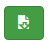
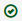
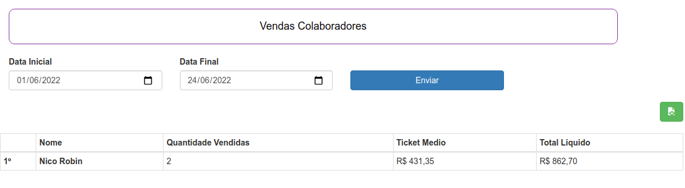

11. RELATÓRIOS
A opção Relatórios no menu superior irá ter alguns relatórios que o sistema realiza.
São eles:
- Brinquedos mais vendidos
- Comandas
- Vendas colaboradores
- Lançamentos e vendas
- Vendas
11.1 Brinquedos mais vendidos
Selecione período desejado, selecione uma Data Inicial e uma Data Final.
Clique em Enviar.

Aparecerá uma lista dos brinquedos mais vendidos nesse período. Com os campos, posição, nome do brinquedo, quantidade vendida, total de vendas, total liquido.
Relatório PDF
Para realizar o download em PDF do relatório
Clique no ícone 
O download será iniciado.
11.2 Comandas
A tela Comandas pode-se verificar o status das comandas.
Selecione período desejado, selecione uma Data Inicial e uma Data Final.
Clique em Enviar.

Aparecerá uma lista das comandas realizadas nesse período .
Comandas com o status a comanda já foi finalizada.
Comandas com o status  estão em aberto.
estão em aberto.
Finalizar comanda
Cliente desistiu da compra e a comanda ficou em aberto.
Clique no ícone .
11.3 Vendas Colaboradores
A tela vendas de colaboradores mostra todos os colaboradores que realizaram vendas.
Selecione período desejado, selecione uma Data Inicial e uma Data Final.
Clique em Enviar.

Aparecerá uma lista dos colaboradores com vendas nesse período. Com os campos, posição, nome do colaborador, quantidade vendida, ticket médio e total liquido.
Relatório PDF
Para realizar o download em PDF do relatório
Clique no ícone
O download será iniciado.
11.4 Lançamento e vendas
A tela de Relatório de vendas e lançamentos é mostrado o saldo do mês.
Selecione período desejado, selecione uma Data Inicial e uma Data Final.
Clique em Enviar.

Aparecerá uma lista com os campos, mês, vendas realizadas, entradas de lançamentos, saída de lançamentos e o saldo (soma a entrada com as vendas e subtrai as saídas).
Relatório PDF
Para realizar o download em PDF do relatório
Clique no ícone
O download será iniciado.
11.5 Vendas
A tela Vendas apresenta todos as vendas realizada pelo período selecionado.
Selecione período desejado, selecione uma Data Inicial e uma Data Final.
Clique em Enviar.
![vendas]imagens/vendas-vendas.png)
Aparecerá uma lista contendo as informações: data da venda, comanda (caso tenha), cliente (caso tenha), vendedor (caso tenha), itens da venda, desconto e o valor pago.
Relatório PDF
Para realizar o download em PDF do relatório
Clique no ícone
O download será iniciado.